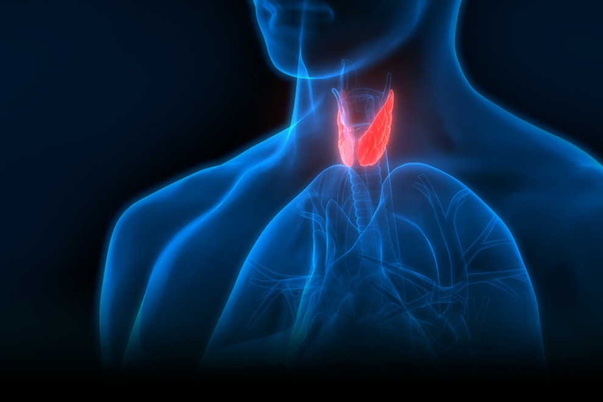
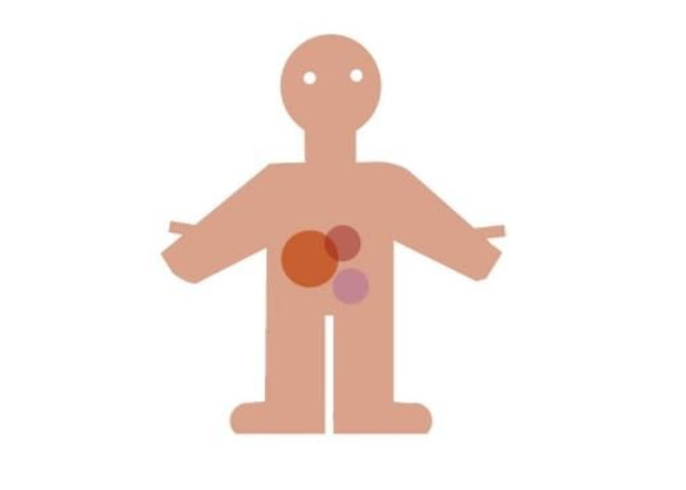
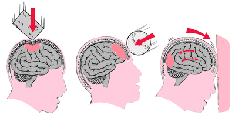

Enfermedades
¿Que son las enfermedades?
Es considerada como cualquier estado donde haya un deterioro de la salud del organismo humano. Todas las enfermedades implican un debilitamiento del sistema natural de defensa del organismo o de aquellos que regulan el medio interno.

Clasificaion de las enfermedades:
1.Enfermedades epidémicas:
Se centra en mejorar el intercambio del conocimiento y la información disponibles sobre las enfermedades infecciosas emergentes y reemergentes; mejorar la vigilancia de las enfermedades epidémicas de posible importancia internacional como la gripe, la fiebre amarilla, las fiebres hemorrágicas virales, el síndrome respiratorio agudo grave, el cólera, la peste neumónica y la enfermedad meningocócica, así como la respuesta frente a ellas, y la vigilancia de la resistencia a los antimicrobianos.
2.Enfermedades constitucionales o generales:
Las enfermedades óseas constitucionales son un conjunto heterogéneo de afecciones causantes de insuficiencia estatural o de anomalías de la estructura del hueso, que pueden ir acompañadas o no por deformaciones. También pueden incluirse las disostosis, que se manifiestan por malformaciones de uno o varios huesos, a veces con malformaciones viscerales o retraso mental. Las osteocondrodisplasias pueden agruparse según su manifestación clínica: condrodisplasias letales, osteopatías detectadas en el nacimiento a partir de una micromelia, una insuficiencia estatural global u otra malformación, condrodisplasia diagnosticada durante la infancia o la adolescencia o con arqueamientos diafisarios o anomalías de desarrollo del cartílago y el tejido fibroso.
3.Enfermedades constitucionales o generales:
es un proceso infeccioso o neoplásico que se origina y se limita a un sistema o área general del cuerpo, como un esguince de tobillo, un forúnculo en la mano, un absceso en el dedo.Un cáncer localizado que no se ha extendido más allá de los márgenes del órgano involucrado también se puede describir como enfermedad localizada, mientras que los cánceres que se extienden a otros tejidos se describen como invasivos. Los tumores que no son de origen hematológico pero que se extienden al torrente sanguíneo o al sistema linfático se conocen como metastásicos.

4.Enfermedades del desarrollo:
Los trastornos de desarrollo son problemas severos y de larga duración. Pueden ser físicos, como la ceguera, afectar las capacidades mentales, como los problemas de aprendizaje; o pueden ser una combinación de ambos, como el síndrome de Down. En general, los problemas duran toda la vida y afectan la vida cotidiana.
5.Traumatismo:
Son lesiones provocadas por accidentes, golpes o caídas, que pueden afectar las diversas extremidades o articulaciones del cuerpo.
